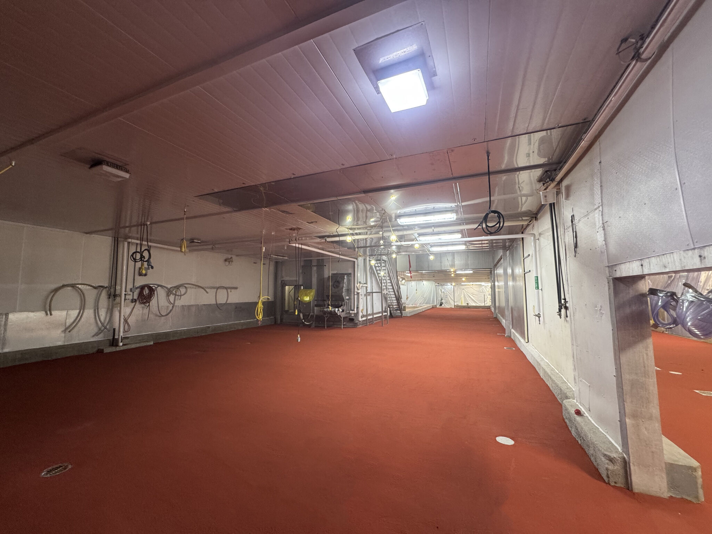
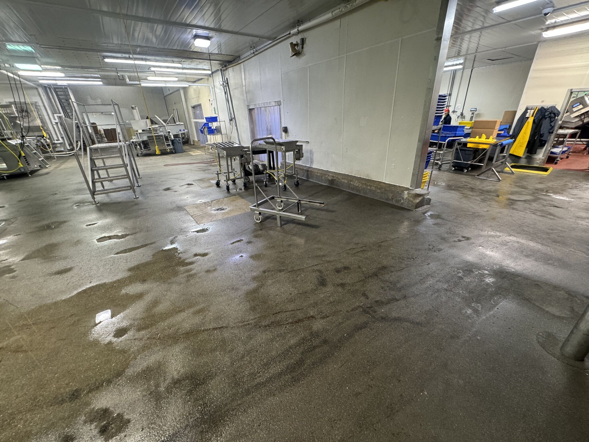
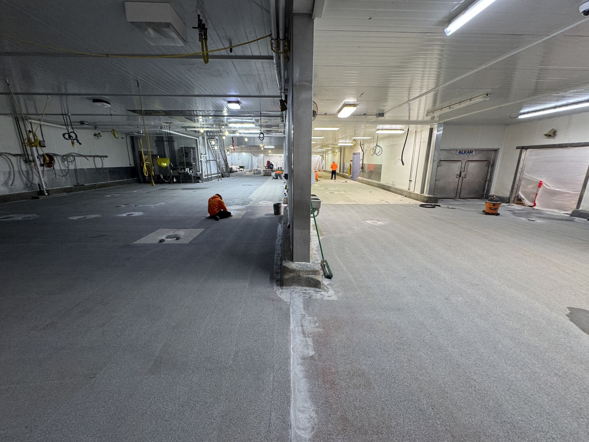
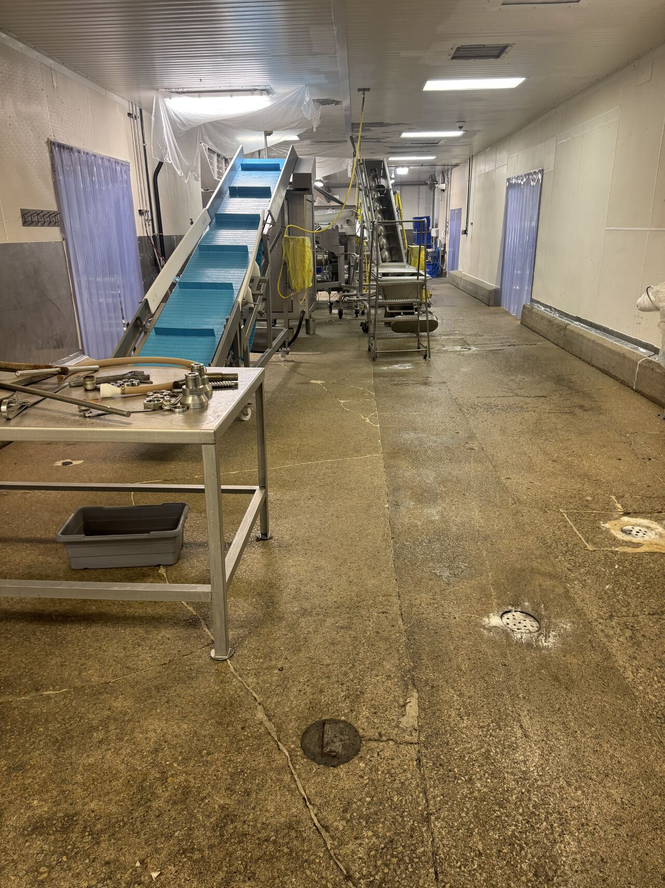
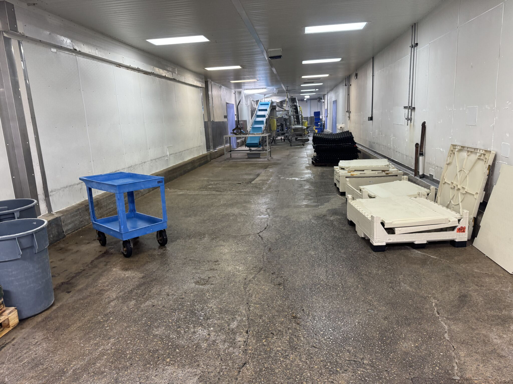
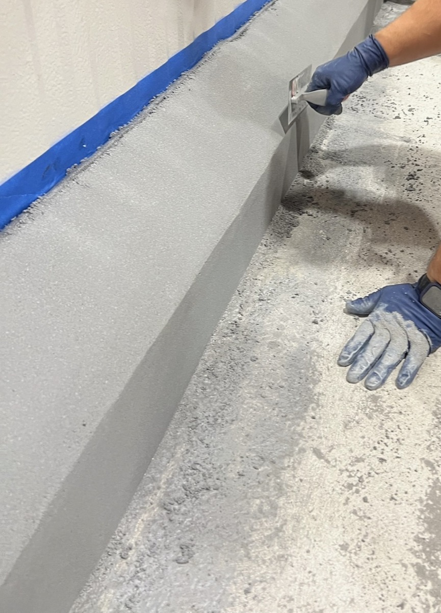

The Best Referral You Can Get

There are a lot of ways to measure success in this business. Square footage installed. Years in operation. Number of facilities completed. But the one that actually means something? When a client moves to a completely new plant and picks up the phone to bring you with them.
That is exactly what happened on this project. We have been working with this particular client for over 20 years. Different facilities, different roles, different challenges. Every time, he called us. So when he landed at a brand new plant and needed the oven room done right, there was no bid war. No RFP process. Just a phone call.
That kind of loyalty is not something you can buy. You earn it by showing up, doing the work correctly, and standing behind it years later.
7,000 Square Feet of SaniCrete STX in a New Oven Room


The scope on this one was straightforward: 7,000 square feet of SaniCrete STX cementitious urethane flooring in a brand new oven room. Oven rooms are one of the most demanding environments in food processing. You are dealing with extreme thermal cycling, constant washdowns, hot product spills, and heavy cart traffic. A standard epoxy or coating system will not survive that. It will crack, delaminate, and become a food safety liability within a couple of years.
SaniCrete STX is built for exactly this kind of abuse. It is a cementitious urethane mortar system that handles thermal shock from sub-zero to 250°F without cracking. It bonds to the concrete substrate and creates a seamless, impervious surface that stands up to aggressive cleaning chemicals, heavy loads, and the daily punishment that comes with running an oven room in a food production facility.

We installed the full 7,000 SF, and the floor came out clean. No callbacks. No punch list issues. Just a solid floor ready to take a beating for the next 15 to 20 years.
Phase 2: VR System with Cant Cove on the Curbs


The project does not stop with the floor. We are coming back for phase 2 to install additional flooring and coat the curbs with our SaniCrete VR system, complete with cant cove detailing.
Curbs and wall transitions are where a lot of flooring contractors cut corners. They will lay a nice floor and leave the curbs uncoated or slap on a thin layer that peels off within a year. That is a problem. Uncoated curbs become harborage points for bacteria. They absorb moisture, break down, and turn into a sanitation nightmare.
Our VR system is a cementitious urethane vertical and cove system designed specifically for these transitions. The cant cove creates a smooth, radiused transition between the floor and the curb, eliminating the 90 degree angle where bacteria love to hide. It is seamless, sanitary, and built to handle the same thermal and chemical exposure as the floor itself.
Getting the curbs right matters just as much as getting the floor right. Inspectors know it. Sanitation teams know it. And after 20 years of working together, our client knows it too.
Products Used
- SaniCrete STX - Heavy-duty cementitious urethane mortar flooring system for extreme thermal and chemical environments
- SaniCrete VR - Cementitious urethane vertical and cove base system for curbs, walls, and transitions